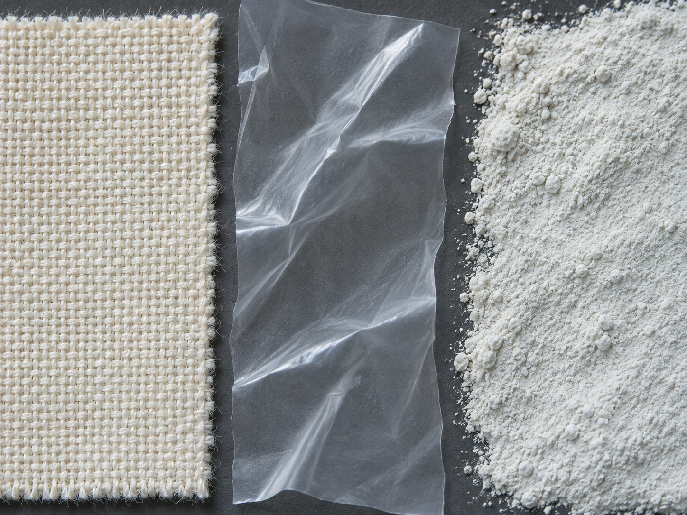
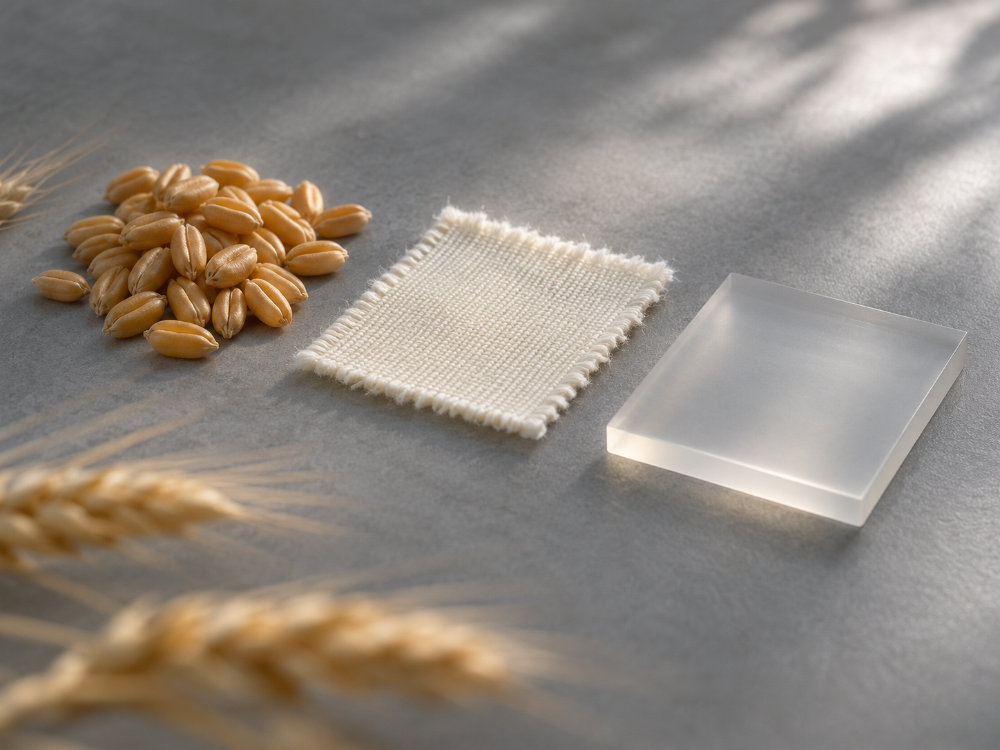

Product information
A product profile explains what the enzyme is and where it is used. A technical sheet gives details for a specific product or grade.
Product specifications, handling information and application guidance. Start with your question, then open the relevant resource.
Find product details and the available technical and safety sheets.

A product profile explains what the enzyme is and where it is used. A technical sheet gives details for a specific product or grade.
An SDS or MSDS addresses handling and safety. Check that it applies to the product and physical form you are reviewing.
Review the process question, enzyme function and relevant conditions.
Application trial guideFeed pelletingSaccharification & fermentationDetergent formulation
The named company, location, activities and certificate period are set out in each document.
View Cangzhou site certificatesFor a specific batch record, contact the SUNSON team handling your order with the product and batch reference.
Ask about your order